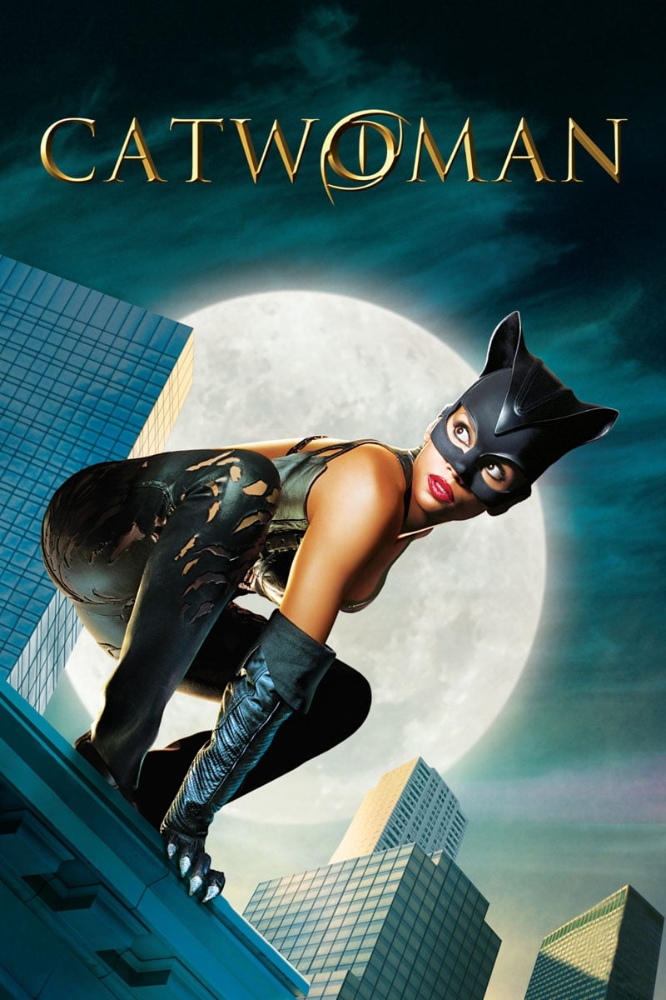

Мировая премьера: 23 июля 2004
Слоган: Поймай кошку.
Сюжет: Скромная художница Пэйшнс Филлипс работает на косметическую компанию "Хедэр Бьюти", которая готовится выпустить революционный анти-возрастной крем. Случайно раскрыв зловещую тайну своего работодателя, она была вероломно убита. Но благодаря загадочной египетской кошке Пэйшнс мистическим образом вернулась к жизни, обретя невероятную силу, ловкость, скорость и обострённые чувства. И теперь она жаждет мести. Приняв образ Женщины-Кошки, она начинает борьбу против компании, стремясь помешать выпуску опасного продукта. На её пути стоят хладнокровная топ-модель Лорел Хедэр и полицейский Том Лоун, разрывающийся между долгом и чувствами к таинственной мстительнице.
Режиссёр: Питоф
В основе: Комиксы о Женщине-Кошке (США, выходят с 1940, автор – Билл Фингер)
В ролях: Хэлли Берри, Бенджамин Брэтт, Шэрон Стоун
| Хэлли Берри | Пэйшнс Филлипс / Женщина-Кошка |
| Бенджамин Брэтт | Детектив Том Лоун |
| Шэрон Стоун | Лорел Хедэр |
| Ламберт Уилсон | Джордж Хедэр |
| Алекс Борштейн | Сэлли |
| Фрэнсис Конрой | Офелия Пауэрс |
| Майкл Масси | Армандо |
| Байрон Манн | Уэсли |
| Ким Смит | Дрина |
Бюджет: $ 100 млн.
Кассовые сборы в США: $ 40 млн.
Кассовые сборы в мире: $ 82 млн.
Продолжительность: 1 ч. 39 мин.
Рейтинг: 3.4